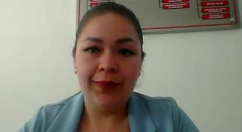

Ambas expositoras coincidieron en que no se enfrentan a ninguna dificultad en especial a la hora de emprender o de ejercer un cargo alto y aseguraron que AMBOS géneros tienen los mismos retos, mismas tareas, etc. Lo que se aclaró es que ser un emprendedor o emprendedora es complicado sin importar si eres hombre o mujer, entre algunos de los retos que mencionaron están:
Se habló del hecho de ser madre, es un reto diferente en su totalidad y se diría incluso más pesado pues se quiera o no es bastante usual que sean las madres quienes están más al pendiente de sus hijos, pero, en palabras de la CEO Janet "No lo hace diferente", ser madre no es un impedimento para ejercer tu profesión o tu negocio, pero es importante la planeación de nuestra maternidad.
En cuanto a su experiencia en el campo laboral fue más extensa su explicación, muchas de las preguntas fueron dirigidas al ámbito empresarial y como es que ambas pudieron seguir adelante con motivación pese a los obstáculos que se les presentaron, considero yo que ser emprendedor es muy difícil pero no imposible si es que luchas por ello, me encanto como hacían hincapié en volver realidad lo que sueñas, que no se quede solo en tu mente y trabajes por hacerlo realidad.
A lo largo de la conferencia se nos dieron o preguntaron varios consejos como jóvenes, de los cuales quiero mencionar los siguientes:
Agradezco en verdad la oportunidad de poder haber asistido a esta conferencia y escuchar a dos grandes mujeres exitosas. Pude ver aplicado lo que ahora estoy aprendiendo en programación con Airblock Technologies y su desarrollo de software, creo que me veo interesada en esta área y deseo en verdad tener la oportunidad de desempeñar un buen papel. Se que hay bajas y altas en cuanto al estado de animo como cualquiera, me gustaría tener la oportunidad de probar por mi misma lo que es la administración, tomaré sus consejos y sus historias como referencia. Considero yo que la conferencia estuvo más enfocada en los negocios o sus vidas empresariales, me alegro que jamás hayan recibido algún tipo de acoso o discriminación por ser mujeres en un campo normalizado para los hombres, se nota el cambio en nuestra sociedad.
La primera en presentarnos es la ingeniera Janet quien nos narra cómo fue el proceso para poder convertirse y llegar a lo que es ahora. Nos relata como trabajó en varios lugares como la Industria General Electric donde fue bien recibida y no hubo distinción alguna en su salario o la forma de tratarla, participó también en un proyecto sobre bicicletas que a pesar de no haber tenido un muy buen resultado logró obtener lo más importante: el aprendizaje.
Desarrolló varios proyectos de emprendimiento, luego fue a Estados Unidos para estudiar la parte de la administración o negocios con lo que logró crear su propia empresa Airblock Technologies que está dedicada al desarrollo de software del mantenimiento de aeronaves para la validación de tareas o certificaciones.
Sin duda es una mujer que inspira a ser como ella, incluso durante la reunión tuvimos la oportunidad de conocer la relación con su hija que note muy unida y me alegro saber que jamás tuvo una dificultad siendo mujer además me emociono pensando en dar mis practicas con la empresa.
Correo: janet@airblock.com
Página: Airblocktech
Nuestra segunda expositora, la ingeniera en informática Monserrat siendo originaria de Salamanca Guanajuato e incluso graduada del CETIs 62 generación 2009, con los mejores promedios de su universidad nos ha hablado un poco de lo que hace actualmente y como llego a ello. Es de las pocas mujeres que transporta residuos peligrosos incluso a nivel nacional. Entre todo el aporte que nos ha dado lo que considero de mayor relevancia es sobre leer, un habito que nos puede ayudar mucho, también la resiliencia poniendo el ejemplo de cómo pensó en abandonar sus sueños por un accidente que sucedió hace poco, en vez de ceder ante los problemas supo como poder salir adelante e incluso certificar su empresa. Creo que es una mujer decidida, trabajadora y me inspiro con ella pesando que yo puedo tener mis propias metas o logros y conseguirlos si es que trabajo mucho en ello
